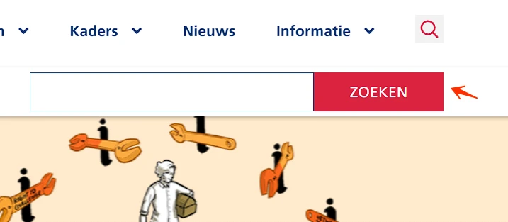
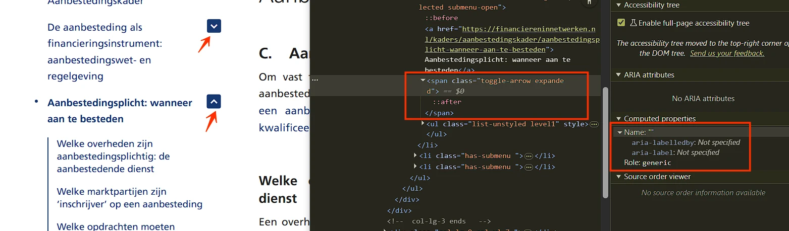
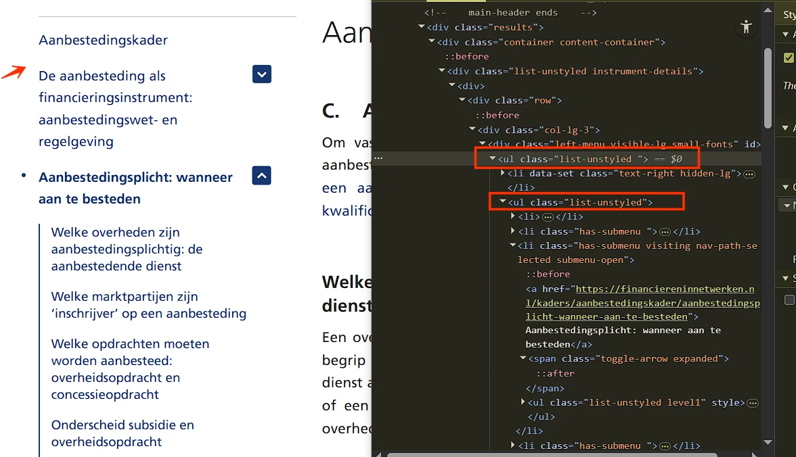

Audit digitale toegankelijkheid van website financiereninnetwerken.nl
Samenvatting
Wij hebben de website financiereninnetwerken.nl onderzocht tussen 10 en 22 februari 2026. Op dit moment is een deel van de succescriteria als voldoende beoordeeld. In dit rapport lees je welke punten nog verbetering behoeven en hoe deze kunnen worden aangepakt.
Op deze pagina functioneert het logo als een link, maar er is geen alt-tekst aanwezig.
De link bestaat uitsluitend uit een afbeelding (logo) zonder tekstalternatief. Daardoor heeft de link geen inhoud voor hulpsoftware zoals schermlezers. Ook is niet duidelijk naar welke bestemming de link verwijst (2.4.4). De link heeft daardoor geen toegankelijke naam en voldoet niet aan succescriterium 4.1.2. De zichtbare tekst in het logo staat niet in de toegankelijke naam van de link. Daardoor werkt de link niet goed als deze met een stemgestuurd systeem wordt geactiveerd. Daarvoor spreekt de bezoeker de tekst uit die zichtbaar is in het logo. Als de toegankelijke naam anders is, zal het systeem de link niet herkennen (2.5.3).
Oplossing:
Voorzie de link van toegankelijke, tekstuele inhoud. Dit kan bijvoorbeeld door:
• een beschrijvende alt-tekst toe te voegen aan de logoafbeelding, zoals "Naar homepage van [organisatienaam]";
• een beschrijvende tekst toe te voegen binnen het <a>-element en deze visueel te verbergen met CSS;
• een aria-label met een korte beschrijving van de bestemming van de link te gebruiken.
Zorg ervoor dat de tekst die zichtbaar is in het logo voorkomt in de toegankelijke naam, bij voorkeur aan het begin. Idealiter is de toegankelijke naam gelijk aan de zichtbare tekst van het logo.
In de header heeft een klikbaar vergrootglas-icoon geen tekstalternatief. Hierdoor heeft de knop geen toegankelijke naam.
Wanneer een knop alleen uit een afbeelding bestaat, moet de alternatieve tekst van de afbeelding de functie van de knop beschrijven.
Oplossing:
Voeg een tekstalternatief toe dat de functie van de knop beschrijft. Dit kan door een tekstalternatief bij het icoon te gebruiken of door een aria-label toe te voegen aan de knop.
#3 - Open/dicht-status van knop ontbreekt in de code
Impact: GrootType: TechniekWCAG: 4.1.2EN: 9.4.1.2
In de header staat een knop met een vergrootglas-icoon waarmee je het zoekpaneel kunt openen en sluiten. De geopende of gesloten toestand is visueel zichtbaar, maar wordt niet programmatisch doorgegeven aan screenreaders. Hierdoor kan hulpsoftware niet bepalen of het zoekpaneel zichtbaar of verborgen is.
Oplossing:
Dit is op te lossen door een aria-expanded-attribuut toe te passen op de knop die wordt geopend en gesloten, of door visueel verborgen tekst toe te voegen die de staat van de sectie beschrijft.
#4 - Invoerveld heeft geen toegankelijke naam
Impact: GrootType: TechniekWCAG: 4.1.2EN: 9.4.1.2
In de header staat een knop met een vergrootglas-icoon die een paneel met het zoekveld opent. Dit zoekveld heeft geen toegankelijke naam.
Hierdoor is het voor blinde of slechtziende bezoekers die een schermlezer gebruiken niet duidelijk wat zij in moeten vullen.
Oplossing:
Dit probleem kun je oplossen door het invoerveld een toegankelijke naam te geven, bijvoorbeeld door het aria-label-attribuut toe te voegen. Andere oplossingen zijn ook mogelijk.
#5 - In- en uitzoomen is niet mogelijk in sommige browsers
Op alle pagina’s is het attribuut maximum-scale=1 aanwezig in het <head>-element van de HTML-code.
Deze code zorgt ervoor dat een bezoeker in sommige browsers niet kan inzoomen.
Oplossing:
Verwijder deze code.
#6 - Toetsenbordfocus onzichtbaar
Impact: GrootType: TechniekWCAG: 2.4.7EN: 9.2.4.7
In de header staat een knop met een vergrootglas-icoon. Deze knop heeft geen zichtbare toetsenbordfocus-indicator.
Oplossing:
Zorg ervoor dat de toetsenbordfocus altijd zichtbaar is op de knop. Gebruik daarvoor een duidelijke focusstijl, zodat bezoekers kunnen zien wanneer een knop actief is.
#7 - Klikbare items in een gesloten sectie krijgen toch toetsenbordfocus
Impact: GrootType: TechniekWCAG: 2.4.3EN: 9.2.4.3
In de header staat een knop met een vergrootglas-icoon die een paneel met een zoekveld opent. Elementen binnen het gesloten paneel krijgen nog steeds toetsenbordfocus, terwijl zij niet zichtbaar zijn.
Dit is verwarrend voor bezoekers die met het toetsenbord navigeren en daarbij naar het scherm kijken.
Oplossing:
Zorg dat elementen die niet zichtbaar zijn geen toetsenbordfocus krijgen.
#8 - Wanneer je met het toetsenbord navigeert, verandert alleen de achtergrondkleur
Impact: GrootType: TechniekWCAG: 1.4.1EN: 9.1.4.1

In de header staat een knop met een vergrootglas-icoon die een paneel opent met de knop “ZOEKEN”. Wanneer deze knop toetsenbordfocus krijgt, verandert alleen de achtergrondkleur van blauw naar rood.
Voor bezoekers met een visuele beperking of kleurenblindheid is zo’n subtiele kleurverandering vaak niet duidelijk genoeg. En ook mensen die met het toetsenbord navigeren moeten goed kunnen zien op welke plek van de pagina ze zijn. Daarvoor moet er een duidelijk zichtbare focusindicator zijn.
Dit probleem komt ook voor op een klein scherm.
Oplossing:
Je kunt het beste een extra visuele aanduiding toevoegen. Denk aan een dikkere rand, een onderstreping of een verandering van achtergrond.
#9 - Status menuknop ontbreekt
Impact: GrootType: TechniekWCAG: 4.1.2EN: 9.4.1.2
Op een klein scherm opent een menuknop met drie horizontale lijnen het mobiele navigatiemenu. De knop geeft geen informatie over de toestand van het menu (geopend of gesloten) aan bezoekers die dit niet kunnen zien, zoals bezoekers die een schermlezer gebruiken.
Oplossing:
Zorg ervoor dat de status van het menu ook in de code beschikbaar is. Gebruik hiervoor bijvoorbeeld het aria-expanded-attribuut op de menuknop. Zet dit attribuut "true" wanneer het menu is geopend en op “false" wanneer het menu is gesloten.
#10 - Toetsenbordfocus onzichtbaar
Impact: GrootType: TechniekWCAG: 2.4.7EN: 9.2.4.7
In de header van de website, wanneer deze wordt bekeken op een klein scherm, heeft de knop met drie horizontale lijnen geen zichtbare toetsenbordfocus-indicator.
Oplossing:
Zorg ervoor dat de toetsenbordfocus altijd zichtbaar is op knoppen. Gebruik daarvoor een duidelijke focusstijl, zodat bezoekers kunnen zien wanneer een knop actief is.
#11 - Klikbare elementen in het gesloten mobiele menu krijgen nog steeds toetsenbordfocus
Impact: GrootType: TechniekWCAG: 2.4.3EN: 9.2.4.3
Op een klein scherm verschijnt een knop voor het mobiele menu. Elementen binnen het gesloten mobiele menu krijgen nog steeds toetsenbordfocus, terwijl zij niet zichtbaar zijn.
Dit is verwarrend voor bezoekers die met het toetsenbord navigeren en daarbij naar het scherm kijken.
Oplossing:
Zorg dat elementen die niet zichtbaar zijn geen toetsenbordfocus krijgen.
#12 - Toetsenbordfocus menu onjuist ingesteld
Impact: GrootType: TechniekWCAG: 2.4.3EN: 9.2.4.3
Op een klein scherm verschijnt een knop voor het mobiele menu. Deze knop opent een mobiel menu. Bezoekers kunnen momenteel met het toetsenbord uit het mobiele menu navigeren. De toetsenbordfocus verschuift dan naar de onderliggende pagina terwijl het menu open blijft.
Wanneer het mobiele menu geopend is, kan de toetsenbordfocus het menu verlaten. De focus verplaatst zich naar elementen op de onderliggende pagina terwijl het menu geopend blijft.
Oplossing:
Zorg ervoor dat de toetsenbordfocus binnen het mobiele menu blijft zolang het menu is geopend. Verplaats de focus pas terug naar de onderliggende pagina nadat het menu is gesloten, bijvoorbeeld via een sluitknop of met de ESC-toets. Als alternatief kan het menu automatisch worden gesloten wanneer de focus het menu verlaat.
#13 - Elementen die toetsenbordfocus krijgen zijn bedekt door een mobiel menu
Impact: GrootType: TechniekWCAG: 2.4.11
In de header staat een knop met drie horizontale lijnen waarmee een zijmenu wordt geopend. Wanneer dit menu is geopend, bedekt het menu de interactieve elementen op de onderliggende pagina. Deze elementen kunnen nog steeds toetsenbordfocus krijgen, terwijl ze niet zichtbaar zijn. Elementen die toetsenbordfocus krijgen, moeten altijd zichtbaar zijn, omdat dit anders verwarrend kan zijn voor bezoekers die met het toetsenbord navigeren.
Oplossing:
Zorg ervoor dat de toetsenbordfocus binnen het menu blijft totdat het menu wordt gesloten via de sluitknop of door het indrukken van de ESC-toets. Een andere mogelijkheid is dat het menu automatisch sluit zodra de focus het menu verlaat. Onderliggende interactieve elementen mogen geen toetsenbordfocus krijgen zolang het menu is geopend.
#14 - De sluitknop heeft geen juiste rol en geen toegankelijke naam
Op kleine schermen staat in het geopende mobiele menu een knop met een “X”-icoon om het menu te sluiten. Deze knop heeft niet de juiste toegankelijke rol en heeft geen toegankelijke naam.
De sluitknop is gemaakt met een element dat niet de juiste rol heeft en geen toegankelijke naam bevat. Omdat de knop een actie uitvoert (het sluiten van het menu), moet het element de rol “button” hebben. Daarnaast moet een knop altijd een toegankelijke naam hebben die de functie beschrijft. Zonder deze informatie kan hulpsoftware de knop niet herkennen en weten blinde bezoekers niet wat de knop doet.
Oplossing:
Zorg ervoor dat het element de juiste toegankelijke rol heeft. Dit kan door:
1. het <button>-element te gebruiken: maak de knop met het button-element. Dit element heeft standaard de juiste rol.
2. `role=”button” toe te voegen: als een ander element is gebruikt (meestal niet aan te raden), voeg dan dit attribuut toe om de rol expliciet vast te leggen.
Geef de knop daarnaast een toegankelijke naam. Dit kan door een tekstalternatief bij het icoon te gebruiken of door een aria-label toe te voegen aan de knop.
#15 - Toetsenbordbediening ontbreekt
Impact: GrootType: TechniekWCAG: 2.1.1EN: 9.2.1.1
Op kleine schermen staat in het geopende mobiele menu een knop met een “X”-icoon om het menu te sluiten. Deze knop is niet met het toetsenbord te bedienen.
Oplossing:
Zorg ervoor dat de knop zowel met de spatiebalk als met de Enter-toets kan worden bediend.
#16 - Bezoekers die inzoomen tot 400% kunnen niet meer alle tekst lezen
Wanneer deze pagina wordt bekeken met een schermresolutie van 1280 bij 1024 pixels en ingezoomd tot 400%, is in de footer de volgende tekst gedeeltelijk niet zichtbaar: “Disclaimer & Toegankelijkheidsverklaring”.
Oplossing:
Zorg dat alles nog werkt en leesbaar is als een bezoeker sterk inzoomt.
#17 - Decoratieve content is aanwezig voor hulpsoftware
Op verschillende pagina’s van de website zijn decoratieve iconen toegevoegd via CSS pseudo-elementen (::before / ::after) met tekens uit een icoonfont (bijvoorbeeld font-family: 'icons' en content: "g"). In de huidige situatie worden deze tekens, zoals "g" en "h", voorgelezen door schermlezers. Dit is verwarrend voor bezoekers die een schermlezer gebruiken, omdat deze tekens geen betekenisvolle informatie geven.
Voorbeelden hiervan zijn:
Zorg ervoor dat decoratieve iconen niet toegankelijk zijn voor hulpsoftware. Decoratieve elementen moeten alleen visueel zijn en mogen niet worden voorgelezen door schermlezers.
Hiervoor kan het nodig zijn om de huidige implementatie aan te passen, zodat deze iconen verborgen zijn voor hulpsoftware.
#18 - Onjuiste toegankelijke rol bij een interactief element
In de footer staat een knop met een pijl-omhoog-icoon om te scrollen. Deze knop heeft niet de juiste toegankelijke rol.
Dit element heeft niet de juiste toegankelijke rol. Daardoor herkennen schermlezers niet dat het om een knop gaat. Hulpsoftware kan het element niet correct aankondigen of bedienen.
Oplossing:
Zorg ervoor dat dit element de juiste toegankelijke rol heeft.
De beste oplossing is om standaard HTML-elementen te gebruiken, zoals <button>.
Er staat een link met witte tekst “ALLE FINANCIERINGSINSTRUMENTEN” op een oranje (#F05A00) achtergrond. De contrastratio is te laag: 3,4:1.
Oplossing:
Omdat deze tekst kleiner is dan 24px en niet vetgedrukt, moet het contrast minimaal 4,5:1 zijn. Op deze pagina staat een instructie om kleurcontrast te testen: https://properaccess.nl/hoe-test-ik-kleurcontrast/.
#20 - Afbeeldingen met volgnummers hebben geen alternatieve tekst
Impact: MediumType: ContentWCAG: 1.1.1EN: 9.1.1.1
Onder de koppen "Prioritering advies", "Voor- en nadelen van financieringsinstrumenten" en andere staan afbeeldingen met cijfers van 1 tot en met 4 die de volgorde aangeven. Deze afbeeldingen hebben geen tekstalternatief.
Afbeeldingen die informatie overdragen moeten een tekstalternatief hebben. Dan kan een schermlezer de informatie uit de afbeelding overbrengen aan een blinde bezoeker. In dit geval kunnen gebruikers van schermlezers de volgorde-informatie niet waarnemen.
Oplossing:
Zorg dat informatieve afbeeldingen een tekstalternatief hebben. Voor deze afbeeldingen kan het tekstalternatief bijvoorbeeld “Stap 1”, “Stap 2” enzovoort zijn.
#21 - Kleurcontrast bij tekst groter dan 24px is onvoldoende
Onder de koppen “Prioritering advies”, “Voor- en nadelen van financieringsinstrumenten” en andere staan afbeeldingen met witte cijfers van 1 tot en met 4 op een lichtgrijze (#F5F5F5) achtergrond. De contrastratio is te laag: 1,1:1.
#22 - Alternatieve tekst zorgt voor herhaling van tekst
Impact: MediumType: ContentWCAG: 1.1.1EN: 9.1.1.1
Onder de kop “Nieuws” staan artikelen met afbeeldingen. Het tekstalternatief van deze afbeeldingen herhaalt de tekst van de kop en bevat onnodige woorden zoals “image”. Bijvoorbeeld: “image Interview: Veerle van Waarde defends her thesis on revolving funds.”
De schermlezer leest nu dezelfde informatie twee keer voor. Laat het alt-attribuut leeg om herhaling van de tekst te voorkomen.
De volgorde van HTML-elementen binnen artikelen is niet logisch, omdat afbeeldingen en tags boven de kop staan. De huidige volgorde is: afbeelding, tag, kop, tekst.
Wanneer een schermlezer de inhoud van boven naar beneden voorleest, is niet duidelijk welke afbeeldingen en teksten bij welk artikel horen. De kop staat in de code niet bovenaan en vormt daardoor geen herkenbaar beginpunt. Dit kan verwarrend zijn voor gebruikers van een schermlezer.
Als de afbeelding decoratief is, zorg er dan voor dat deze niet wordt voorgelezen door hulpsoftware. Dit kan meestal door het leeglaten van het alt-attribuut.
Als de afbeelding informatief is, pas dan de volgorde van de HTML-elementen aan, zodat de kop bovenaan staat. De visuele volgorde kan met CSS hetzelfde blijven.
#24 - Logos hebben geen tekstalternatief
Impact: GrootType: TechniekWCAG: 1.1.1EN: 9.1.1.1
Onder de kop “Partners” hebben de logo’s geen tekstalternatief. Het alt-attribuut is leeg.
Informatieve afbeeldingen, zoals een logo, moeten altijd een alt-tekst hebben waarin de volledige tekst is opgenomen die in het logo zichtbaar is. Zonder dit alternatief is de informatie in het logo niet beschikbaar voor bezoekers die de afbeelding niet kunnen waarnemen.
Oplossing:
Zorg dat logo’s een tekstalternatief hebben dat de volledige tekst van de logo’s bevat.
Op deze pagina staat onder de kop “Financieren in Netwerken” in een alinea de link “Lees hier”. Kleur is het enige verschil tussen de link en de gewone tekst.
De links in de tekst zijn alleen te herkennen aan een kleurverschil ten opzichte van de omringende tekst. Daardoor is het niet voor alle bezoekers duidelijk dat het om links gaat.
Op deze pagina wordt onder de kop "Door wie is deze website ontwikkeld?" het <strong>-element gebruikt voor opmaak: “De schrijvers en adviseurs die aan deze keuzetool hebben meegewerkt:”.
Het <strong>-element heeft een semantische betekenis en wordt gebruikt om extra nadruk aan tekst te geven. Wanneer dit element wordt ingezet voor een visueel effect, komt de semantische structuur van de inhoud niet overeen met de visuele presentatie.
Oplossing:
Verwijder de onjuiste strong-elementen en gebruik CSS om de tekst vet weer te geven. Als uitsluitend visuele nadruk nodig is, kan ook een <b>-element worden gebruikt.
#27 - Kleurcontrast bij tekst kleiner dan 24px en niet vetgedrukt is onvoldoende
Er staat grijze (#777777) tekst “Vereist” op een witte achtergrond. De contrastratio is te laag: 4,47:1.
Oplossing:
Omdat deze tekst kleiner is dan 24px en niet vetgedrukt, moet het contrast minimaal 4,5:1 zijn. Op deze pagina staat een instructie om kleurcontrast te testen: https://properaccess.nl/hoe-test-ik-kleurcontrast/.
#28 - De kleur van de rand van het invoerveld heeft niet genoeg contrast
Onder de kop "Neem contact met ons op:" staat een formulier. De contrastratio tussen de lichtgrijze (#CCCCCC) randen van de invoervelden en de witte achtergrond is 1,6:1.
Oplossing:
De randen van interactieve elementen zoals invoervelden moeten minimaal een contrast van 3,0:1 hebben met de achtergrond.
autocomplete-attribuut ontbreekt bij invoervelden voor persoonsgegevens
Op deze pagina ontbreekt bij een formulier met invoervelden voor persoonsgegevens (bijvoorbeeld “Naam”, “E-mailadres”, “Organisatie”) het autocomplete-attribuut.
Invoervelden voor persoonlijke informatie, zoals achternaam, e-mailadres of telefoonnummer, moeten het autocomplete-attribuut bevatten. Dit stelt browsers en hulpsoftware in staat om gebruikers te ondersteunen, bijvoorbeeld door relevante velden automatisch in te vullen.
Oplossing:
Gebruik het autocomplete-attribuut voor alle velden waarin persoonsgegevens moet worden gevuld. Meer informatie over autocomplete en welke waardes je verplicht moet gebruiken: https://www.w3.org/Translations/WCAG22-nl/#input-purposes.
#29 - HTML5 foutmeldingen worden getoond
Impact: GrootType: TechniekWCAG: 3.3.1EN: 9.3.3.1
Op deze pagina wordt in een formulier HTML5-validatie gebruikt. Hierdoor worden standaard HTML5-foutmeldingen getoond wanneer het formulier wordt verstuurd terwijl het invoerveld “E-mailadres” niet correct is ingevuld.
Deze foutmeldingen worden niet door alle browsers en schermlezers even goed ondersteund. Elke browser toont de meldingen anders, en niet altijd op een toegankelijke manier: de melding is soms kortaf en onvolledig.
Oplossing:
Voeg altijd zelf foutmeldingen toe aan het formulier. Controleer of er nog meer formulieren zijn die dit probleem hebben.
#30 - Informatie is niet meer leesbaar als tekstafstand wordt aangepast
Op deze pagina wordt de kop “Over ons” gedeeltelijk onzichtbaar en onleesbaar wanneer bezoekers de tekstafstand toepassen zoals beschreven in dit succescriterium.
Sommige bezoekers passen de weergave van de tekst aan, zodat zij de tekst beter kunnen lezen. Denk aan het vergroten van de afstand tussen regels, letters of woorden. Het gaat bijvoorbeeld om mensen met dyslexie. Als een bezoeker dit doet op de manier die in succescriterium 1.4.12 is beschreven, moet alles goed blijven werken. Bovendien moet de tekst leesbaar blijven.
Oplossing:
Je lost dit op door de hoogte en breedte van de containers van de tekst responsief te maken. Op deze pagina lees je hoe je dit succescriterium kunt testen: 1.4.12 - Wat betekent "Tekstafstand".
Onder de kop “Zoeken in deze website” heeft het zoekveld geen toegankelijke naam.
Hierdoor is het voor blinde of slechtziende bezoekers die een schermlezer gebruiken niet duidelijk wat zij in moeten vullen. De zichtbare tekst staat niet in de toegankelijke naam van het invoerveld. Daardoor werkt de link niet goed als deze met een stemgestuurd systeem wordt geactiveerd. Daarvoor spreekt de bezoeker de tekst uit die zichtbaar is bij op in het invoerveld. Als de toegankelijke naam anders is, zal het systeem de link niet herkennen (2.5.3).
Oplossing:
Dit probleem kun je oplossen door het invoerveld een toegankelijke naam te geven, bijvoorbeeld door het aria-label-attribuut toe te voegen. Andere oplossingen zijn ook mogelijk.
Zorg ervoor dat de toegankelijke naam de zichtbare tekst bevat, bij voorkeur aan het begin van de naam.
#32 - Kleurcontrast bij tekst kleiner dan 24px en niet vetgedrukt is onvoldoende
Er staan grijze (#999999) links op een witte achtergrond, bijvoorbeeld “https://financiereninnetwerken.nl/”. De contrastratio is te laag: 2,8:1.
Oplossing:
Omdat deze tekst kleiner is dan 24px en niet vetgedrukt, moet het contrast minimaal 4,5:1 zijn. Op deze pagina staat een instructie om kleurcontrast te testen: https://properaccess.nl/hoe-test-ik-kleurcontrast/.
#33 - Onvoldoende linktekst om de bestemming van de link te kunnen bepalen
Op deze pagina hebben de pagineringlinks korte teksten zoals “2”, “3” en andere.
Deze teksten beschrijven niet goed waar de links naartoe verwijzen. Voor ziende bezoekers is het duidelijk, maar voor slechtziende bezoekers en bezoekers die een schermlezer gebruiken, is het niet altijd duidelijk dat dit links naar volgende pagina’s zijn.
Dit probleem komt ook voor op pagina https://financiereninnetwerken.nl/nieuwsoverzicht.
Oplossing:
Je verbetert dit door de linkteksten aan te vullen met het (visueel verborgen) woord "pagina”.
#34 - Informatieve elementen zijn verborgen voor hulpsoftware
In de paginering is de link met het pijl-icoon verborgen voor een screenreader met visibility: hidden.
Voor bezoekers die de pagina laten voorlezen is deze informatie daardoor niet toegankelijk. Het is niet toegestaan om informatie of functionaliteit te verbergen voor hulpsoftware.
Dit probleem hangt ook samen met succescriterium 2.1.1, omdat deze link niet met het toetsenbord te bedienen is.
Dit probleem komt ook voor op pagina https://financiereninnetwerken.nl/nieuwsoverzicht.
Oplossing:
Verwijder het visibility: hidden.
#35 - Bezoekers die inzoomen tot 400% kunnen niet meer alle tekst lezen
Op deze pagina staat een iframe met een video zonder beschrijving die voor een screenreader zichtbaar is. Het title-attribuut ontbreekt.
Iframes moeten een duidelijke beschrijving hebben, meestal via het title-attribuut. Daarin moet worden aangegeven welk type inhoud wordt weergegeven (bijvoorbeeld een podcast of video) en waar die inhoud over gaat. De beschrijving moet uniek en betekenisvol zijn. Door de beschrijving kunnen bezoekers met hulpsoftware bepalen of het de moeite waard is om de inhoud van het iframe te verkennen.
Oplossing:
Voeg het title-attribuut aan het iframe-element toe, en zet daar een tekst in waaruit blijkt welk type inhoud het iframe bevat, en waar het inhoudelijk over gaat.
#37 - De automatisch gegenereerde ondertiteling heeft fouten
Impact: MediumType: ContentWCAG: 1.2.2EN: 9.1.2.2
Op deze pagina staat een video met een voice-over. Hoewel er ondertitels aanwezig zijn, zijn deze automatisch gegenereerd en daardoor niet nauwkeurig.
Video’s waarin gesproken wordt, moeten altijd goede ondertiteling krijgen. Zo krijgen bezoekers die de video niet (goed) kunnen horen ook alle informatie. Deze ondertiteling moet exact hetzelfde zijn als wat wordt gezegd. De automatisch gegenereerde ondertiteling voldoet hier niet aan, omdat er punctuatie ontbreekt en er fouten in kunnen zitten.
Oplossing:
Zorg dat de ondertiteling van hoge kwaliteit is en exact weergeeft wat wordt gezegd in de video.
#38 - Video bevat tekst of logo’s waarvoor geen alternatief is
Op deze pagina staat onder de kop “Voor wie is deze website bedoeld?” een video. In de video verschijnt op verschillende momenten tekst (bijvoorbeeld rond 0:03, 0:23 en andere tijdstippen). Er is echter geen media-alternatief of audiodescriptie aanwezig.
De video bevat visuele informatie (tekst en logo’s) die niet toegankelijk is voor blinde bezoekers.
Bezoekers die blind of slechtziend zijn, missen hierdoor informatie.
Oplossing:
Voor succescriterium 1.2.3 kan dit worden opgelost met een geschreven tekst (media-alternatief). Voor succescriterium 1.2.5 is dat echter niet genoeg. Hiervoor moet een audiobeschrijving worden toegevoegd die de visuele elementen in de video beschrijft, zoals namen, functies, logo’s en teksten. Audiobeschrijving moet alleen op de plekken worden toegevoegd waar de ruimte voor is. De meeste video’s hebben deze ruimte aan het begin en op het eind.
#39 - De Youtube-video’s gebruiken letters als sneltoetsen
Impact: MediumType: ContentWCAG: 2.1.4EN: 9.2.1.4
Op deze pagina staat een YouTube-videospeler die sneltoetsen met één teken gebruikt.
De Youtube-speler gebruikt sneltoetsen, zoals de ‘k' om de video te starten of stoppen en de 'm' om het geluid uit te zetten. Deze sneltoetsen botsen met schermlezers. Ze zijn namelijk ook actief als de toetsenbordfocus op een ander element in de videospeler staat. Dit kan problemen geven voor mensen die met spraakbediening werken, omdat deze letters soms in de uitgesproken woorden zitten. Ook voor mensen die per ongeluk een toets op het toetsenbord indrukken is het onhandig.
Oplossing:
Je lost dit op door de parameter disablekb=1 toe te voegen aan de URI van de video in de HTML-code. Hiermee schakel je de sneltoetsen uit, terwijl toetsenbordbediening mogelijk blijft. Bekijk voor meer informatie https://developers.google.com/youtube/player_parameters#disablekb (Engels).
#40 - Alternatieve tekst zorgt voor herhaling van tekst
Impact: MediumType: ContentWCAG: 1.1.1EN: 9.1.1.1
Onder de kop “Interview: Veerle van Waarde verdedigt haar proefschrift over revolverende fondsen” staat een afbeelding waarvan de alt-tekst de tekst van de kop herhaalt.
De schermlezer leest nu dezelfde informatie twee keer voor. Laat het alt-attribuut leeg om herhaling van de tekst te voorkomen.
Oplossing:
Laat het alt-attribuut leeg om herhaling van de tekst te voorkomen (alt="").
#41 - Kop niet gemarkeerd als kop
Impact: MediumType: ContentWCAG: 1.3.1EN: 9.1.3.1
Op deze pagina zijn de volgende teksten niet als kop gemarkeerd: "Hoe zou je een revolverend fonds uitleggen aan iemand zonder financiële en/of juridische achtergrond?", "Hoe zou je je proefschrift in vijf zinnen omschrijven?" en andere.
Voor bezoekers die hulpsoftware gebruiken, is tekst die visueel als kop is vormgegeven maar niet als kop is gemarkeerd in de code niet bruikbaar. Deze bezoekers navigeren via koppen om de inhoud te scannen of snel naar een specifieke sectie te gaan. Dit is alleen mogelijk wanneer koppen ook in de code als koppen zijn vastgelegd. Wanneer koppen uitsluitend visueel zijn vormgegeven, bijvoorbeeld door vetgedrukte tekst, wijkt de informatiestructuur in de code af van de visuele structuur van de pagina.
Op deze pagina staat een instructie om de koppenstructuur van een webpagina te testen: https://properaccess.nl/zo-controleer-je-de-koppenstructuur-van-je-website/.
Oplossing:
Markeer koppen met het juiste HTML-element en gebruik daarbij het juiste kopniveau (h1 tot en met h6).
#42 - Bezoekers die inzoomen tot 400% kunnen niet meer alle tekst lezen
Wanneer deze pagina wordt bekeken met een schermresolutie van 1280 bij 1024 pixels en ingezoomd tot 400%, is sommige tekst gedeeltelijk niet zichtbaar, bijvoorbeeld “overheidsfinancieringsinstrument”.
Oplossing:
Zorg dat alles nog werkt en leesbaar is als een bezoeker sterk inzoomt.
#43 - De knop heeft geen juiste rol, geen toegankelijke naam en geen toestand
Impact: GrootType: TechniekWCAG: 4.1.2EN: 9.4.1.2

In de zijbalk staan naast de links knoppen met pijl-icoontjes waarmee je het submenu kunt openen en sluiten. Deze knoppen hebben geen juiste toegankelijke rol, naam en toestand (open/gesloten).
De knoppen zijn gemaakt met een element dat niet de juiste rol heeft en geen toegankelijke naam bevat. Omdat de knoppen een actie uitvoeren (het openen en sluiten van het submenu), moet het element de rol ‘button’ hebben. Daarnaast moet een knop altijd een toegankelijke naam hebben die de functie beschrijft. Zonder deze informatie kan hulpsoftware de knoppen niet herkennen en weten blinde bezoekers niet wat de knoppen doen. Als de knoppen extra inhoud openen en sluiten, moet ook de toestand (open/gesloten) in de code worden aangegeven.
Gebruik een <button>-element voor de knop. Als dit niet mogelijk is, voeg dan role="button" toe aan het element en zorg dat het element voldoet aan de bijbehorende eisen voor toetsenbordbediening en focus.
Geef de knop daarnaast een toegankelijke naam, bijvoorbeeld met een aria-label-attribuut.
Om de toestand van een submenu (open of gesloten) aan te geven, kun je het aria-expanded-attribuut toepassen op de knop die het submenu opent en sluit, of visueel verborgen tekst toevoegen die de toestand van het submenu beschrijft.
#44 - Toetsenbordbediening ontbreekt
Impact: GrootType: TechniekWCAG: 2.1.1EN: 9.2.1.1
In de zijbalk staan naast de links knoppen met pijl-icoontjes waarmee je het submenu kunt openen en sluiten. Deze knoppen zijn niet met het toetsenbord te bedienen.
Zorg ervoor dat de knop zowel met de spatiebalk als met de Enter-toets kan worden bediend.
#45 - Onjuist gebruik <p>-element
Impact: MediumType: ContentWCAG: 1.3.1EN: 9.1.3.1
Onder de kop "Welke opdrachten moeten worden aanbesteed: overheidsopdracht en concessieopdracht" is een tekstblok met drie alinea’s onjuist gemarkeerd als twee <p>-elementen.
Visueel zijn er meerdere tekstblokken met witruimte ertussen zichtbaar. Deze structuur komt in de code niet overeen met de visuele presentatie.
Oplossing:
Plaats elke alinea in een afzonderlijk <p>-element. Het aantal alinea’s dat wordt weergegeven moet overeenkomen met het aantal <p>-elementen in de code.
#46 - Lijstelementen zijn niet correct genest
Impact: MediumType: ContentWCAG: 1.3.1EN: 9.1.3.1

In de zijbalk is een lijst aanwezig waarbij geneste lijstelementen (ul) direct onder het hoofdlijstelement zijn geplaatst. Dit is een onjuiste neststructuur; geneste lijsten moeten altijd binnen een li-element worden geplaatst.
Hierdoor kunnen schermlezers de hiërarchische structuur van de lijst niet correct interpreteren, wat de navigatie en het begrip van de inhoud bemoeilijkt voor gebruikers met een visuele beperking.
Dit probleem komt ook voor op de volgende pagina’s:
Plaats alle geneste ul-elementen binnen de bijbehorende li-elementen van de hoofdlijst. Zorg ervoor dat de HTML-structuur als volgt is: <ul><li>Item 1<ul><li>Subitem</li></ul></li></ul>.
#47 - Interne links op de pagina functioneren niet als skiplink
In de zijbalk, in het submenu “Aanbestedingsplicht: wanneer aan te besteden”, staan interne links die bezoekers naar specifieke onderdelen van de pagina brengen. Wanneer deze links worden geactiveerd, scrollt de pagina visueel naar het doel. De leespositie van screenreaders verschuift echter niet naar de doelinhoud.
Daardoor blijven bezoekers die een screenreader gebruiken, na het activeren van de link en het navigeren met leescommando’s (bijvoorbeeld de pijltjestoetsen), op de lijst met links staan en bereiken zij het doelgedeelte niet. Interne navigatie op de pagina werkt daardoor niet als skiplink voor bezoekers die een screenreader gebruiken. Zie pagina https://www.w3.org/WAI/WCAG22/Techniques/general/G124.
Zorg dat wanneer een skiplink wordt geactiveerd, de toetsenbordfocus verplaatst naar het doelelement (bijvoorbeeld de kop).
#48 - De knop heeft geen juiste toegankelijke rol en geen juiste toestand
Impact: GrootType: TechniekWCAG: 4.1.2EN: 9.4.1.2
Op een klein scherm verschijnt de knop “Inhoudsopgave”, waarmee extra inhoud kan worden geopend en gesloten. Deze knop heeft geen juiste toegankelijke rol en geen juiste toestand (open/gesloten).
De knop is gemaakt met een element dat niet de juiste rol heeft. Omdat de knop een actie uitvoert (het openen en sluiten van het submenu), moet het element de rol ‘button’ hebben. Daarnaast moet de toestand (open/gesloten) in de code worden aangegeven.
Gebruik een <button>-element voor de knop. Als dit niet mogelijk is, voeg dan role="button" toe aan het element en zorg dat het element voldoet aan de bijbehorende eisen voor toetsenbordbediening en focus.
Om de toestand van extra inhoud (open of gesloten) aan te geven, kun je het aria-expanded-attribuut toepassen op de knop die deze inhoud opent en sluit, of visueel verborgen tekst toevoegen die de toestand van de extra inhoud beschrijft.
#49 - Toetsenbordbediening ontbreekt
Impact: GrootType: TechniekWCAG: 2.1.1EN: 9.2.1.1
Op een klein scherm verschijnt de knop “Inhoudsopgave”, waarmee extra inhoud kan worden geopend en gesloten. Deze knop is niet met het toetsenbord te bedienen.
Op deze pagina zijn checkboxes verborgen voor screenreaders met display: none en niet met het toetsenbord te bereiken.
Het is niet toegestaan om interactieve elementen te verbergen voor hulpsoftware. Een blinde bezoeker moet toegang hebben tot dezelfde informatie en functionaliteit als een ziende bezoeker. Daarnaast moeten alle interactieve elementen bereikbaar zijn via toetsenbordnavigatie voor bezoekers die geen muis kunnen gebruiken.
Zorg dat alle checkboxes beschikbaar zijn voor screenreaders door display: none te verwijderen of te vervangen door een toegankelijke manier van verbergen. Zorg er ook voor dat alle checkboxes met het toetsenbord te bedienen zijn door ervoor te zorgen dat ze focus kunnen krijgen en met de spatiebalk geactiveerd kunnen worden.
#51 - Informatieve afbeeldingen hebben geen tekstalternatief
Impact: MediumType: ContentWCAG: 1.1.1EN: 9.1.1.1
Op deze pagina staan onder elke sectie lijsten met “+”- en “-”-iconen die voordelen en nadelen aangeven. Deze iconen hebben geen tekstalternatief.
Wanneer een afbeelding informatie overbrengt, moet de alternatieve tekst die informatie volledig en betekenisvol beschrijven. In dit geval wordt de visueel aangeboden informatie niet overgebracht aan gebruikers van schermlezers.
Zorg voor tekstalternatieven voor deze iconen, bijvoorbeeld door visueel verborgen tekst toe te voegen. Andere oplossingen zijn ook mogelijk.
#52 - Onduidelijke linktekst
Impact: MediumType: ContentWCAG: 2.4.4EN: 9.2.4.4
Op deze pagina bevatten meerdere links de niet-informatieve tekst “LEES MEER”. Deze tekst beschrijft het doel van de link niet duidelijk. Dit kan verwarrend zijn, vooral voor bezoekers met een cognitieve beperking of voor bezoekers die een screenreader gebruiken.
Meerdere links op deze pagina hebben dezelfde, nietszeggende linktekst. Daardoor is op basis van de linktekst niet duidelijk waar de link naartoe leidt. Dit maakt het lastig om links van elkaar te onderscheiden, met name voor gebruikers van een schermlezer of links buiten de context te bekijken.
Zorg ervoor dat de linktekst het doel van de link duidelijk beschrijft. Dit kan bijvoorbeeld door een algemene tekst zoals ‘lees meer’ aan te vullen met extra context.
Als visueel duidelijk is waar de link bij hoort, kan deze aanvullende tekst visueel worden verborgen. Bijvoorbeeld: ‘lees meer (Matchfunding)’ of ‘lees meer (Netwerksubsidie)’.
Voorbeeld: Lees meer over Matchfunding
#53 - Onjuiste toegankelijke rol knop
Impact: GrootType: TechniekWCAG: 4.1.2EN: 9.4.1.2
Op deze pagina wordt, wanneer een bezoeker een checkbox “Vergelijk dit met andere oplossingen” aanvinkt, de knop met tekst “VERGELIJK” getoond. Deze knop is echter onjuist gecodeerd als een <a>-element (link).
Het element functioneert als een knop, maar is gemarkeerd als een link. Daardoor heeft het element een onjuiste toegankelijke rol. Hulpsoftware herkent het element niet als knop en kan de functionaliteit niet correct aankondigen.
Daarnaast blijft de knop, wanneer deze visueel als uitgeschakeld wordt getoond en niet met de muis te bedienen is, wel te bedienen via het toetsenbord. De uitgeschakelde toestand is daardoor niet programmatisch doorgegeven, wat zorgt voor inconsistent gedrag tussen verschillende bedieningsmethoden.
Zorg ervoor dat het element de juiste rol krijgt. Gebruik hiervoor bij voorkeur een <button>-element. Als dit niet mogelijk is, voeg role="button" toe aan het bestaande element.
Zorg er ook voor dat de toestand van de knop (uitgeschakeld of actief) in de code wordt aangegeven.
#54 - Kleurcontrast bij tekst kleiner dan 24px en niet vetgedrukt is onvoldoende
Op deze pagina wordt, wanneer een bezoeker een checkbox “Vergelijk dit met andere oplossingen” aanvinkt, de link met de witte tekst “VERGELIJK” getoond. De witte tekst staat op een grijze achtergrond (#6B7EA3). De contrastratio is te laag: 4,1:1.
Deze tekst is niet voor iedereen goed zichtbaar.
Oplossing:
Omdat deze tekst kleiner dan 24px en niet vetgedrukt, moet het contrast minimaal 4,5:1 zijn. Op deze pagina staat een instructie om kleurcontrast te testen: https://properaccess.nl/hoe-test-ik-kleurcontrast/.
#55 - Statusbericht na selecteren vergelijkingsopties wordt niet tijdig voorgelezen
Impact: GrootType: TechniekWCAG: 4.1.3EN: 9.4.1.3
Op deze pagina kunnen gebruikers financieringsinstrumenten selecteren voor vergelijking door middel van checkboxes. Wanneer een checkbox wordt aangevinkt, verschijnt dynamisch de melding "U kunt maximaal 4 financieringsinstrumenten vergelijken. 1/4 geselecteerd". Schermlezers lezen deze melding niet op en bezoekers die een schermlezer gebruiken krijgen deze informatie niet op het moment waarop het nodig is.
Oplossing:
Meldingen zoals deze worden statusberichten genoemd. Deze moeten altijd worden opgemerkt door screenreaders, zodat ze automatisch worden voorgelezen. Voeg hiervoor het aria-live-attribuut toe aan de melding. Of bereik dit door role="status" aan de melding toe te voegen. Zie voor meer informatie de pagina https://www.w3.org/WAI/WCAG21/Techniques/aria/ARIA19.
Onder de teksten “Matchfunding” en “Netwerksubsidie” staan afbeeldingen met lichtroze (#F0788B) tekst “0%” op een witte achtergrond. De contrastratio is te laag: 2,7:1.
Oplossing:
Omdat deze tekst kleiner is dan 24px en niet vetgedrukt, moet het contrast minimaal 4,5:1 zijn. Op deze pagina staat een instructie om kleurcontrast te testen: https://properaccess.nl/hoe-test-ik-kleurcontrast/.
Op deze pagina staat een vergelijking tussen “Matchfunding” en “Netwerksubsidie”. De pagina is visueel opgedeeld in twee delen: één voor “Matchfunding” en één voor “Netwerksubsidie”. Deze relatie is echter niet vastgelegd in de code. Hierdoor kunnen bezoekers die een screenreader gebruiken niet begrijpen wat bij welk onderdeel hoort. De visuele structuur moet worden vastgelegd in de HTML-code.
Oplossing:
Dit kun je bijvoorbeeld oplossen door twee aparte secties te maken, zodat duidelijk is welke informatie bij welk onderdeel hoort, bijvoorbeeld met tabellen. Andere oplossingen zijn ook mogelijk.
Op een klein scherm staan er secties “Matchfunding” en “Netwerksubsidie” die eruitzien en werken als tabs. De vereiste rollen en attributen voor tabs (bijvoorbeeld aria-controls) ontbreken.
Dit probleem hangt ook samen met succescriterium 2.1.1, omdat deze tabs niet met het toetsenbord te bedienen zijn.
Op deze pagina staat bij elke stap een groep radioknoppen met daarboven een tekst, bijvoorbeeld: "Is het van belang dat de overheidsbijdrage (gedeeltelijk) terugkomt en deze eventueel (opnieuw) ingezet kan worden voor het traject of andere publieke doelen?" Hoewel deze elementen visueel gegroepeerd zijn, is deze relatie niet vastgelegd in de HTML-code.
Oplossing:
Je lost dit op door de elementen in een fieldset-element te plaatsen. Een fieldset met interactieve inhoud moet een naam hebben. Hiervoor kun je het legend-element gebruiken. Plaats hierin de tekst “Is het van belang dat de overheidsbijdrage (gedeeltelijk) terugkomt en deze eventueel (opnieuw) ingezet kan worden voor het traject of andere publieke doelen?”.
#60 - Het statusbericht over de stap in de vragenlijst wordt niet op tijd voorgelezen
Impact: GrootType: TechniekWCAG: 4.1.3EN: 9.4.1.3
Bij elke stap staat een voortgangsbalk met tekst, bijvoorbeeld “1/18”. Wanneer naar de volgende stap wordt gegaan, veranderen de voortgang en de tekst. De pagina wordt echter niet opnieuw geladen en deze informatie wordt niet automatisch aangekondigd door screenreaders.
Oplossing:
Meldingen zoals deze worden statusberichten genoemd. En die moeten altijd opgemerkt worden door schermlezers, zodat die ze automatisch voorlezen. Voeg hiervoor aria-live-attribuut (bijvoorbeeld aria-live="polite") aan de melding toe. Of, dat bereik je door role="status" aan de melding toe te voegen. Zie voor meer informatie de pagina https://www.w3.org/WAI/WCAG21/Techniques/aria/ARIA19.
Boven de kop “Mirjam Hendriks” staat een logo met zichtbare tekst “Provincie Noord-Holland”. Dit logo is een achtergrondafbeelding en heeft geen tekstalternatief.
Informatieve afbeeldingen, zoals een logo, moeten altijd een tekstalternatief hebben waarin de volledige tekst is opgenomen die in het logo zichtbaar is. Zonder dit alternatief is de informatie in het logo niet beschikbaar voor bezoekers die de afbeelding niet kunnen waarnemen.
Oplossing:
Zorg ervoor dat het logo is voorzien van een tekstalternatief waarin de volledige tekst van het logo is opgenomen.
Over dit onderzoek
Leeswijzer
Onze rapporten zijn anders. Bij het bespreken van de gevonden problemen volgen wij niet de structuur van de norm, maar die van jouw website of app. Hierdoor kun je gewoon per pagina of scherm aan de slag gaan. Wel zo makkelijk! Je vindt verderop een overzicht van alle pagina’s met problemen.
We geven je bij elk gevonden issue een paar voorbeelden, maar niet een complete lijst. Controleer zelf of het probleem ook nog op andere plekken voorkomt. Zie het rapport als een leidraad.
Gebruikte norm
Dit onderzoek laat zien in hoeverre de website op dit moment voldoet aan WCAG 2.2, niveau A en AA. WCAG staat voor Web Content Accessibility Guidelines. Dit is de internationale norm voor digitale toegankelijkheid. De Europese norm EN 301 549 bevat alle eisen van WCAG op niveau A en AA.
In dit rapport hebben we korte beschrijvingen van de succescriteria uit de norm opgenomen, met een algemene uitleg erbij. Wil je ze helemaal lezen? Bekijk dan de documentatie van WCAG.
Gebruikte onderzoeksmethode
We gebruiken de onderzoeksmethode WCAG-EM van het W3C. Het proces ziet er als volgt uit:
vaststellen wat binnen en buiten scope valt
vaststellen welke technologieën zijn gebruikt
steekproef (sample) samenstellen
steekproef onderzoeken
gevonden issues beschrijven
Het grootste deel van het onderzoek doen we met de hand. Voor een deel van de toegankelijkheidseisen gebruiken we automatische tools als ondersteuning, zoals axe-core en Chrome Developer Tools.
Belangrijk om te weten
Dit rapport helpt je om de toegankelijkheid van je website te verbeteren. Maar let op: het is geen definitieve, volledige lijst van alle aanwezige toegankelijkheidsproblemen. Dat zit zo:
Het is een steekproef
Ten eerste is het onderzoek gebaseerd op een steekproef. Die is op een betrouwbare manier genomen, en de meeste problemen zullen daardoor zeker aan het licht komen. Toch kan een probleem net buiten de steekproef vallen. Bij een volgend onderzoek kan het wel ontdekt worden.
Op basis van falsificatie
We beoordelen vanuit het principe van falsificatie. Dat houdt in dat we proberen te bewijzen dat iets niet waar is, in plaats van te bevestigen dat het klopt. ‘Voldoet’ betekent daarom dat we geen reden hebben gevonden om een punt af te keuren. Maar als we later wél een reden vinden, kan het alsnog worden afgekeurd.
Voortschrijdend inzicht
Het komt voor dat de beoordeling van een succescriterium op detailniveau verandert. De norm beschrijft namelijk niet élk mogelijk scenario. Samen met andere onderzoeksbureaus overleggen we hoe we met bepaalde situaties omgaan. Zo kan iets dat nu wordt afgekeurd, soms bij een volgend onderzoek worden goedgekeurd en andersom.
Oplossen leidt tot nieuw probleem
Ten slotte kan het gebeuren dat bij het oplossen van een probleem onbedoeld een nieuw toegankelijkheidsprobleem ontstaat. Dat komt dan bij een volgend onderzoek pas naar voren.
Hoe werkt dit rapport?
Bevindingen bekijken en filteren
Alle gevonden toegankelijkheidsproblemen staan onder Gevonden problemen. Je kunt de bevindingen filteren op:
Impact (Groot, Medium, Klein, Advies) — hoe ernstig is het probleem voor de gebruiker?
Type (Content, Techniek) — moet de inhoud of de techniek worden aangepast?
Status (Open, Opgelost) — welke problemen zijn al verholpen?
Voortgang bijhouden
Je kunt je voortgang op twee manieren bijhouden:
CSV-export — exporteer alle bevindingen als CSV-bestand en laad het in een (online) spreadsheet om met je team samen te werken.
Jira-export — exporteer alle bevindingen als Jira-compatibel CSV-bestand. Importeer het via Jira > Issues > Import issues from CSV. Bevindingen worden aangemaakt als bugs met prioriteit op basis van impact.
Registreer in de browser — activeer deze optie om per bevinding bij te houden of het is opgelost. Je voortgang wordt opgeslagen in je browser. Niemand anders kan je resultaat zien. Let op: de voortgang is gekoppeld aan je browser. Als je een andere browser of een ander apparaat gebruikt, begint de telling opnieuw.
Plan van aanpak — download een geprioriteerd plan van aanpak om de gevonden problemen stap voor stap op te lossen. Dit is beschikbaar bij audits vanaf maart 2026.
Link naar een specifieke bevinding delen
Bij elke bevinding verschijnt een link-icoon wanneer je er met de muis overheen gaat. Klik op dit icoon om de directe link naar die bevinding te kopiëren. Je kunt deze link plakken in een e-mail of chatbericht, bijvoorbeeld om een vraag te stellen aan Proper Access over een specifiek punt.